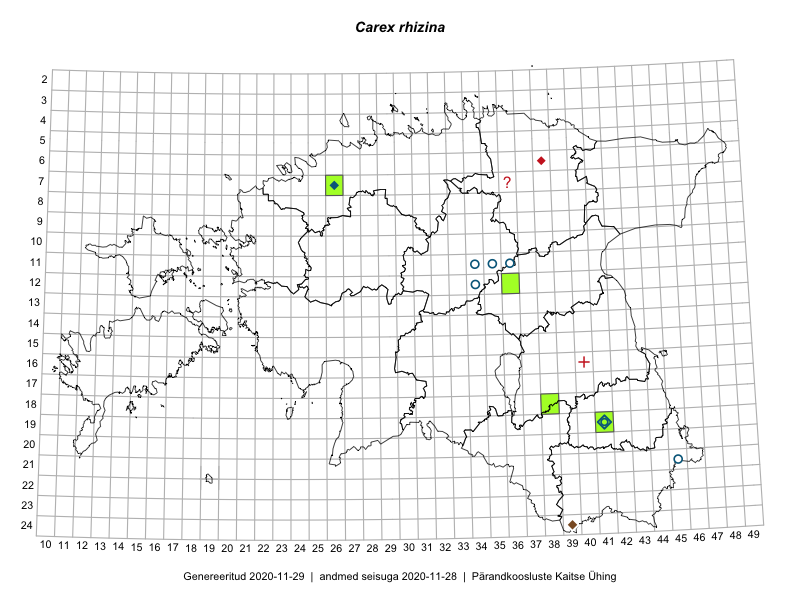

Carex rhizina — jalgtarn
Cyperaceae :: Carex rhizina Blytt ex Lindblom (48)

Kaart põhineb 48 kirjel:
vaatlusi 6
herbaareksemplare 42
Taime kaasaegsed ja ajaloolised leiukohad asuvad 8 ruudus.
Tingmärgid ja ruutude arvud periooditi (U1 / V2 )
█ 2006–2020 (4/–)
◆/◇ 1971–2005 (2/3)
○ 1921–1970 (5/2)
+ kuni 1920 (0/1)
× hävinud (–/0)
? kaheldav (–/1)
| Ruut | Leidja(d) | Leiuaeg | Kirje |
|---|---|---|---|
| 18-38 | Ülle Jõgar, Illi Tarmu, Kai Rünk | 2015-05-19 | ruut/ala: Carex rhizina Blytt ex Lindblom |
| 18-38 | Ülle Jõgar, Illi Tarmu, Kai Rünk | 2015-05-19 | ruut/ala: Carex rhizina Blytt ex Lindblom |
| 07-26 | Meeli Mesipuu, Thea Kull | 2016-06-03 | ruut/ala: Carex rhizina Blytt ex Lindblom |
| 07-26 | Meeli Mesipuu, Thea Kull | 2016-06-03 | ruut/ala: Carex rhizina Blytt ex Lindblom |
| 19-41 | Thea Kull | 2011-05-11 | ruut/ala: Carex rhizina Blytt ex Lindblom |
| 19-41 | Thea Kull | 2011-05-11 | ruut/ala: Carex rhizina Blytt ex Lindblom |
| 19-41 | K. Eichwald | 1955-06-16 | TU251417: Carex rhizina Blytt ex Lindblom |
| 19-41 | L. Pihlapuu | 1969-07-02 | TU251421: Carex rhizina Blytt ex Lindblom |
| 19-41 | K. Eichwald | 1955-06-16 | TU251424: Carex rhizina Blytt ex Lindblom |
| 19-41 | K. Eichwald | 1955-06-16 | TU251425: Carex rhizina Blytt ex Lindblom |
| 19-41 | Mare Toom, Thea Kull | 2011-05-11 | TU262182: Carex rhizina Blytt ex Lindblom |
| 19-41 | Mare Toom, Thea Kull | 2011-05-11 | TU262183: Carex rhizina Blytt ex Lindblom |
| 19-41 | Mare Toom, Thea Kull | 2006-07-26 | TU262184: Carex rhizina Blytt ex Lindblom |
| 19-41 | Mare Toom, Thea Kull | 2006-07-26 | TU262185: Carex rhizina Blytt ex Lindblom |
| 19-41 | Mare Toom, Thea Kull | 2006-07-26 | TU262186: Carex rhizina Blytt ex Lindblom |
| 21-45 | A. Osiris | 1937-05-28 | TAM0010076: Carex rhizina Blytt ex Lindblom |
| 21-45 | K. Eichvald | 1938-05-24 | TAM0010077: Carex rhizina Blytt ex Lindblom |
| 07-26 | U. Ramst | 1998-07-07 | TAM0068609: Carex rhizina Blytt ex Lindblom |
| 07-26 | U. Ramst | 1998-07-07 | TAM0068610: Carex rhizina Blytt ex Lindblom |
| 07-26 | U. Ramst | 1998-07-07 | TAM0068806: Carex rhizina Blytt ex Lindblom |
| 07-26 | Linda Viljasoo | 1986-07-18 | TAA0052536: Carex rhizina Blytt ex Lindblom |
| 07-26 | Linda Viljasoo | 1986-07-18 | TAA0052537: Carex rhizina Blytt ex Lindblom |
| 11-34 | T. Frey | 1964-07-17 | TAA0052538: Carex rhizina Blytt ex Lindblom |
| 19-41 | Thea Kull | 2006-07-26 | TAA0052539: Carex rhizina Blytt ex Lindblom |
| 19-41 | Linda Viljasoo | 1961-05-11 | TAA0052540: Carex rhizina Blytt ex Lindblom |
| 19-41 | Linda Viljasoo | 1960-06-14 | TAA0052541: Carex rhizina Blytt ex Lindblom |
| 19-41 | Linda Viljasoo | 1960-06-14 | TAA0052542: Carex rhizina Blytt ex Lindblom |
| 19-41 | Linda Viljasoo | 1979-05-16 | TAA0052543: Carex rhizina Blytt ex Lindblom |
| 19-41 | Anneli Palo | 2007-06-06 | TAA0052544: Carex rhizina Blytt ex Lindblom |
| 19-41 | M. Kask, Ella Tammemägi, Linda Viljasoo | 1977-06-06 | TAA0052545: Carex rhizina Blytt ex Lindblom |
| 19-41 | Linda Viljasoo | 1960-06-21 | TAA0052546: Carex rhizina Blytt ex Lindblom |
| 19-41 | Linda Viljasoo | 1960-06-21 | TAA0052547: Carex rhizina Blytt ex Lindblom |
| 19-41 | Linda Viljasoo | 1980-06-07 | TAA0052548: Carex rhizina Blytt ex Lindblom |
| 19-41 | Linda Viljasoo | 1980-06-07 | TAA0052549: Carex rhizina Blytt ex Lindblom |
| 11-35 | T. Frey | 1964-07-15 | TAA0052550: Carex rhizina Blytt ex Lindblom |
| 11-35 | T. Frey | 1964-07-15 | TAA0052551: Carex rhizina Blytt ex Lindblom |
| 12-34 | K. Lukats | 1964-07 | TAA0052552: Carex rhizina Blytt ex Lindblom |
| 19-41 | Thea Kull | 2011-05-11 | TAA0052553: Carex rhizina Blytt ex Lindblom |
| 07-26 | Thea Kull, Meeli Mesipuu | 2016-06-03 | TAA0132880: Carex rhizina Blytt ex Lindblom |
| 07-26 | Thea Kull, Meeli Mesipuu | 2016-06-03 | TAA0132881: Carex rhizina Blytt ex Lindblom |
| 19-41 | Thea Kull | 2016-05-28 | TAA0132882: Carex rhizina Blytt ex Lindblom |
| 18-38 | Illi Tarmu, Ülle Jõgar, Kai Rünk | 2015-05-19 | TAA0118900: Carex rhizina Blytt ex Lindblom |
| 18-38 | Illi Tarmu, Ülle Jõgar, Kai Rünk | 2015-05-19 | TAA0118901: Carex rhizina Blytt ex Lindblom |
| 18-38 | Ott Luuk | 2019-04-19 | TAA0151468: Carex rhizina Blytt ex Lindblom |
| 18-38 | Ott Luuk | 2019-04-19 | TAA0151469: Carex rhizina Blytt ex Lindblom |
| 18-38 | Ott Luuk | 2019-04-19 | TAA0151470: Carex rhizina Blytt ex Lindblom |
| 12-36 | Ott Luuk, Eerik Leibak | 2019-08-27 | TAA0151471: Carex rhizina Blytt ex Lindblom |
| 12-36 | Ott Luuk, Eerik Leibak | 2019-08-27 | TAA0151472: Carex rhizina Blytt ex Lindblom |
Ruutude arv uue atlase andmekogu järgi. Muuhulgas arvestab vanemat herbaariumi, 2005. aasta atlase välitöölehtedelt uuesti digitaliseeritud andmeid jne. Uue atlase andmekogust pärinevad andmed on kaardile kantud siniste sümbolitega.↩︎
Ruutude arv 2005. aasta atlase (Kukk, T., Kull, T., Eesti taimede levikuatlas. Eesti Maaülikool, Põllumajandus- ja Keskkonnainstituut, Tartu, 2005) järgi. Andmeallikana on kasutatud levik.exe programmi, kus igas ruudus on registreeritud vaid uusim leid. Seetõttu on vanemate perioodide kohta andmed puudulikud. Kasutatud levik.exe andmestikus leidub mõningaid kõrvalekaldeid atlase trükis ilmunud versioonist, sagedamini tarnade ja käpaliste seas. Lisaks leidub selles andmestikus valik liike (peamiselt väheste leidudega tulnuktaimed), mille kaarte trükis ei avaldatud. Vana atlase andmed ruutudest, milles ei ole uue atlase andmekogus leide enne 2006. aastat, on kaardil esitatud punaste sümbolitega. Vana atlase andmetel hävinud ja kaheldavaid leiukohti pole hilisemate (taas)leidude põhjal korrigeeritud.↩︎